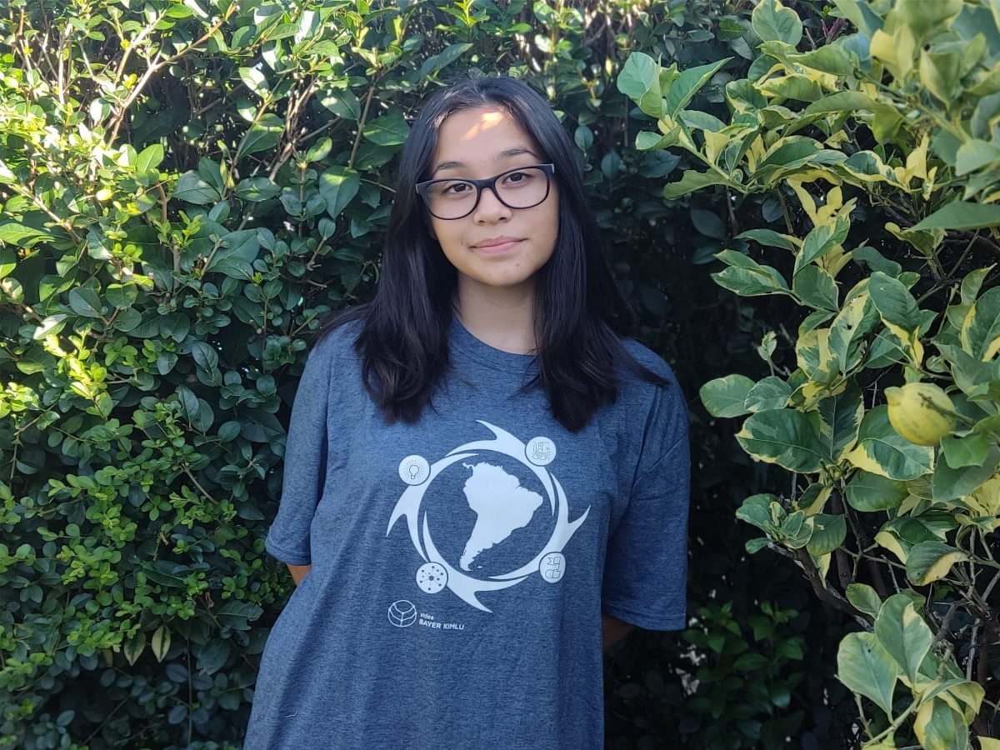
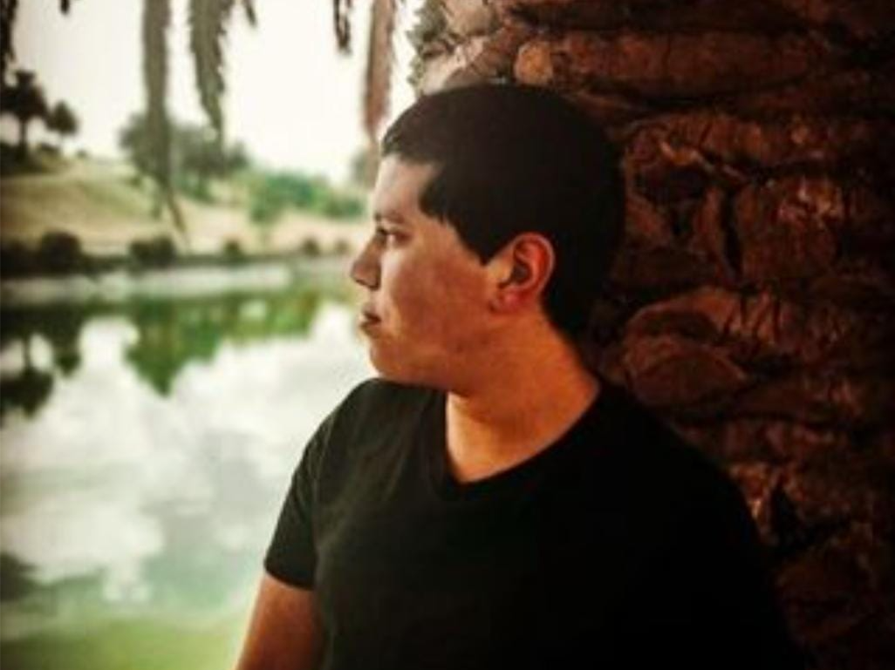

Ariana
Canelones
"El artista plasma en el lienzo con su pincel emociones, creencias, sentimientos en un determinado
estilo; la obra traspasa la pantalla y se instala, subjetivamente, en el observador, la misma dejó de ser del
artista, forma parte del acervo cultural donde la humanidad se nutre.”
“Quiero llevar el arte a las personas que no pueden ir físicamente a un museo y que tengan una experiencia
parecida a la misma.”
Alejo
Montevideo

Brian
Montevideo
“Busco que la gente veo el mundo desde otra perspectiva gracias a este museo es posible”
“Mi visión es que la gente del mundo pueda conocer lo que quiere expresar cada artista le pone a cada
obra, no solo verla y no saber cual es su trasfondo.”
Gabriel
Canelones

Melissa
Montevideo
“Deseo que el público además de ver, experimente al artista a través de sus obras.”
“Deseo que la gente pueda ver arte en la comodidad de su hogar y gracias a nosotros y a más museos es
posible.”
Benjamin
Montevideo